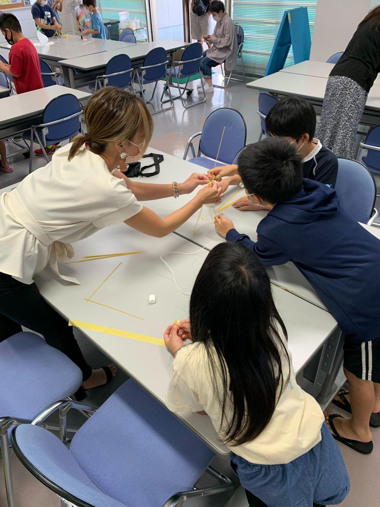
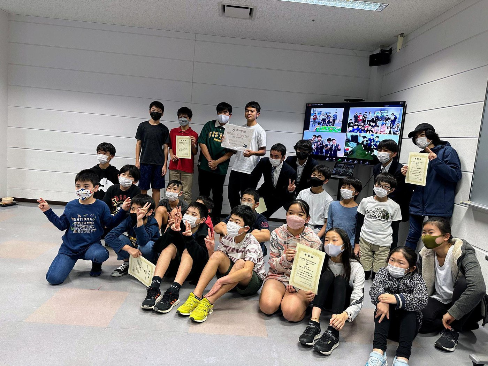
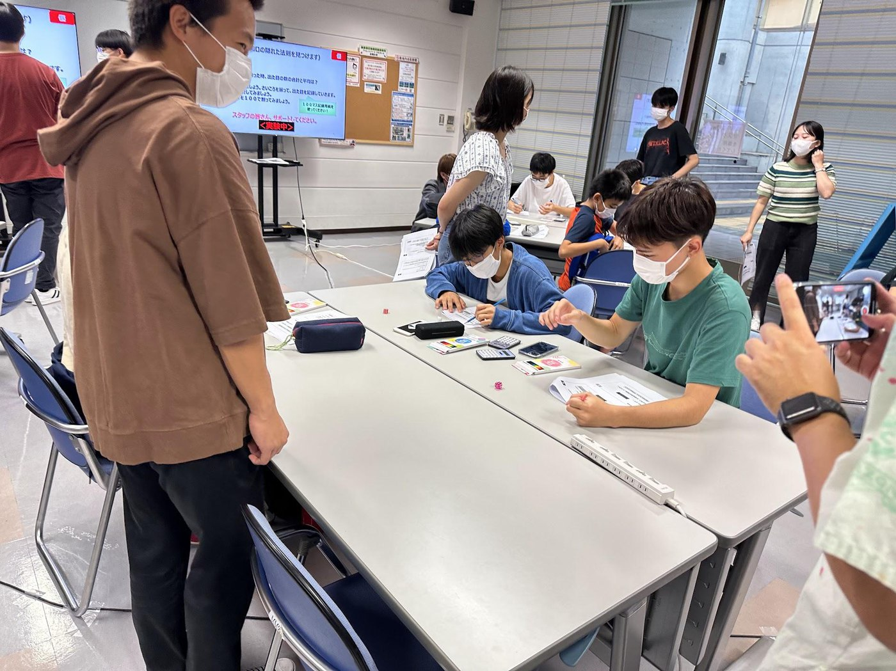
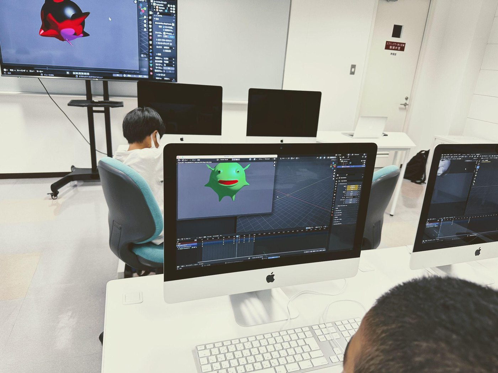
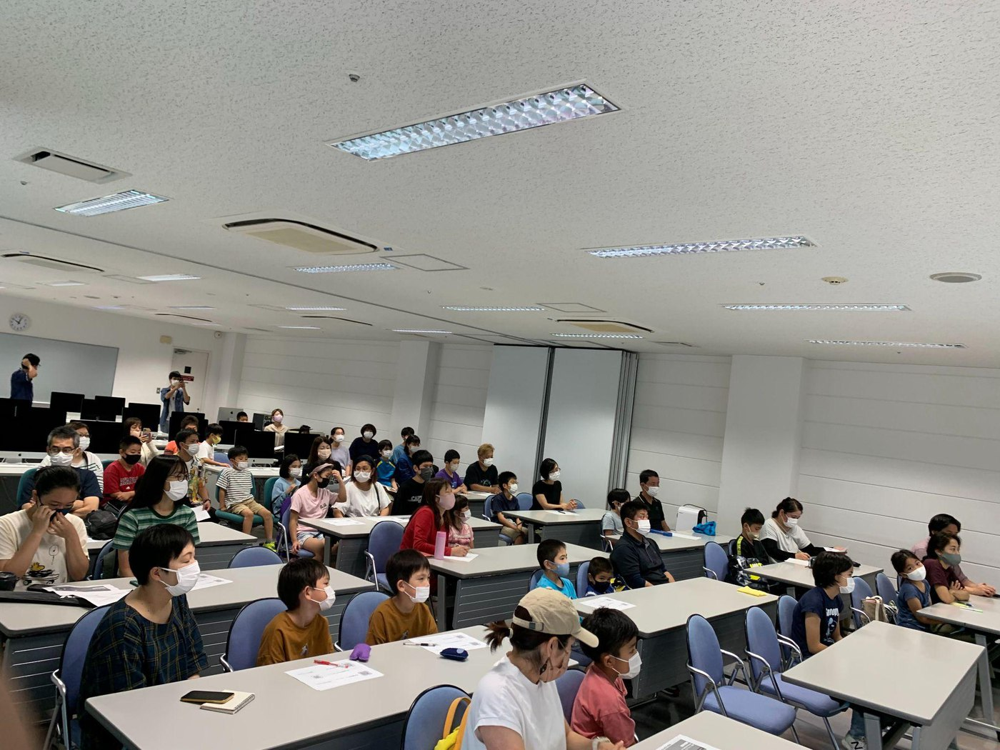
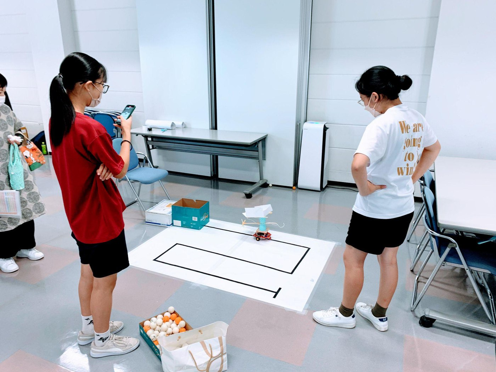
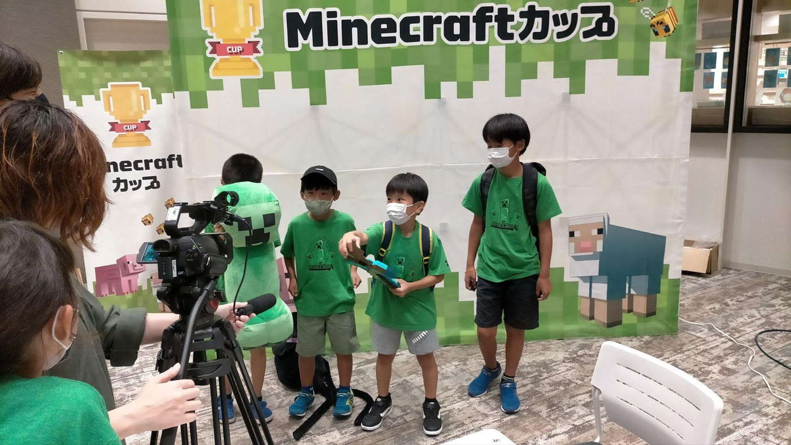
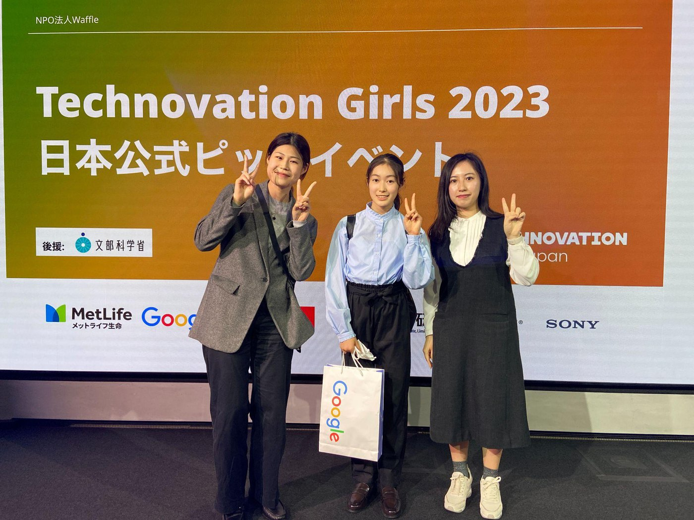
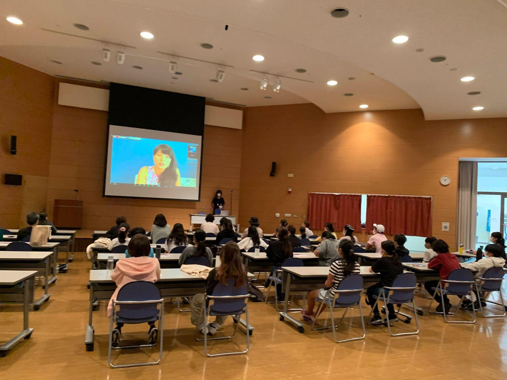
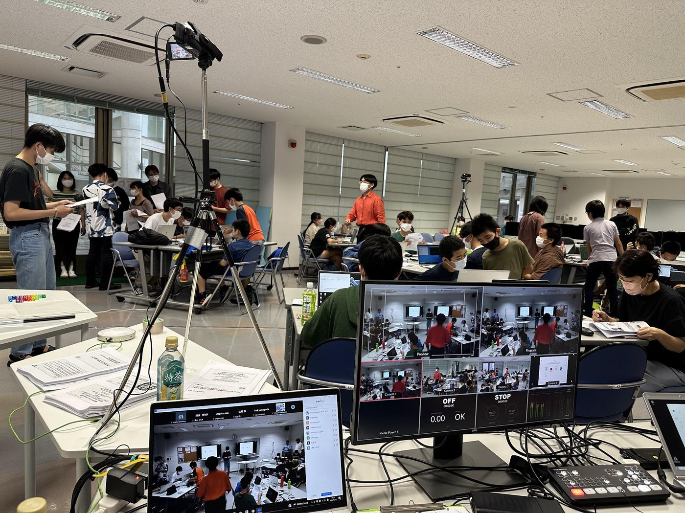

実施期間2022年5月〜2023年3月
5月から3月まで、感染症対策による休みを挟みながら年間を通して実施しました。
デジタル技術の体験、PBL、コンピュータサイエンス関連イベントを組み合わせ、参加者と保護者が多様な学びに触れる年度でした。
2022年度は、5月から3月まで計73回の開催予定で、Scratch、AI、Minecraft、ノーコードアプリ、ロボットプログラミングなどの体験に加え、Minecraftカップ、e-Sportsイベント企画、WRO岐阜交流大会、Technovation GirlsなどのPBLに取り組みました。

5月から3月まで、感染症対策による休みを挟みながら年間を通して実施しました。

オリエンテーションには30名が参加し、年間の活動がスタートしました。

Minecraft、ロボット、AI、アプリ開発に加え、大学・探究学習・進路セミナーも組み込みました。

年間を通じて、デジタル技術の基礎体験と実践の機会を組み合わせました。
作品や活動を外へ開いていく取り組みとして、コンテストやセミナー、大学連携ワークショップも実施しました。
Scratch、AI、Minecraft、ロボット、アプリ開発など、参加者は複数の技術を体験しながら関心のあるテーマを深めました。







Minecraft Cup、e-Sports企画、WRO、Technovation Girlsなど、学んだ技術を外部の挑戦や発表の場へ広げました。
Minecraftを使い、チームでテーマに沿った建築・発表に取り組みました。
Minecraftを使ったe-Sportsイベント企画に取り組み、企画や運営の視点を学びました。
ロボット競技やアプリ開発コンテストなど、外部の挑戦機会にも参加しました。